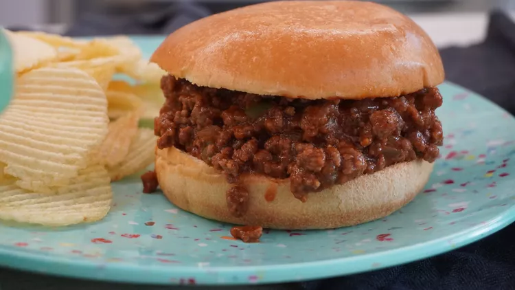

Sloppy Joes

Description
Learn how to cook a beautiful mongolian meatloaf with this simple steps
Ingredients:
- 1 pound lean ground beef
- 1/4 cup chopped onion
- 1/4 cup chopped green bell pepper
- 3/4 cup ketchup, or to taste
- 1 tablespoon brow sugar, or to taste
- 1 teaspoon yellow mustard, or to taste
- 1/2 teaspoon garlic powder
- salt and ground black pepper to taste
- 6 hamburger bunds, split
How to make a Sloppy Joes step-by-step:
- Heat a large skillet over medium heat. Cook and stir lean ground beef in the hot skillet until some of the fat starts to render, 3 to 4 minutes. Add onion and bell pepper; continue to cook until vegetables have softened and beef is cooked through, 3 to 5 more minutes.
- Stir in ketchup, brown sugar, mustard, and garlic powder; season with salt and pepper. Reduce heat to low and simmer for 20 to 30 minutes.
- Divide meat mixture evenly among hamburger buns.